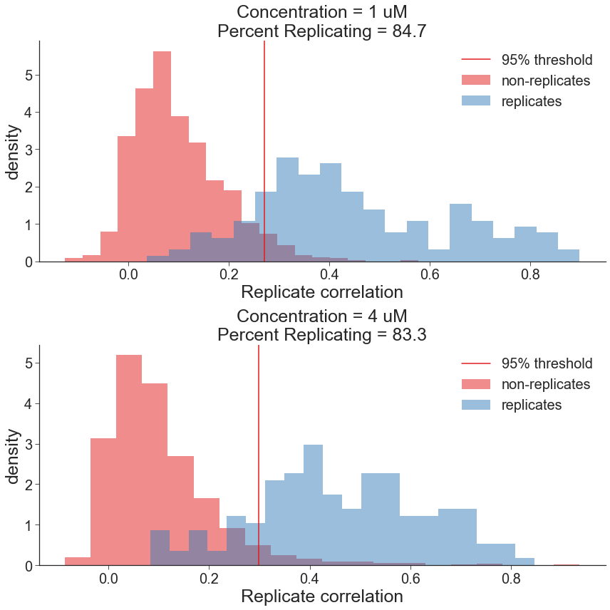
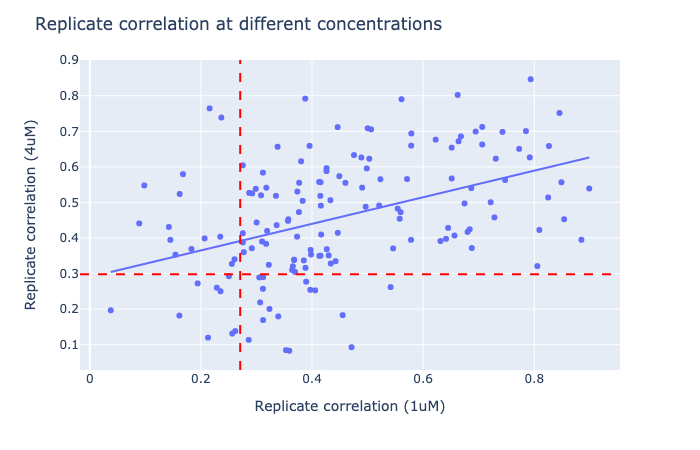

import pandas as pd
import utils
import matplotlib.pyplot as plt
import random
import plotly.express as px
random.seed(9000)
plt.style.use("seaborn-ticks")
plt.rcParams["image.cmap"] = "Set1"
plt.rcParams['axes.prop_cycle'] = plt.cycler(color=plt.cm.Set1.colors)
%matplotlib inlineIn this notebook we calculate Percent Replicating to measure of the proportion of perturbations with detectable signature. The following are the steps taken
- Normalized, feature selected profiles are read and the replicate plates are merged into a single dataframe.
- Separate data frames are created for each concentration and all the following steps are repeated for each data frame
- Negative control, Positive control and empty wells are removed from the dataframe.
- The signal distribution, which is the median pairwise replicate correlation, is computed for each replicate.
- The null distribution, which is the median pairwise correlation of non-replicates, is computed for 1000 combinations of non-replicates.
- Percent Replicating is computed as the percentage of the signal distribution that is the greater than the 95th percentile of null distribution.
- The signal and noise distributions and the Percent Replicating values are plotted and the table of Percent Replicating is printed.
- A single table with replicate correlations at both concentration is printed.
- A scatter plot of replicate correlations at the two concentrations is plotted.
experiment_df = pd.read_csv('output/experiment-metadata.tsv', sep='\t')
corr_replicating_df = pd.DataFrame()
group_by_feature = 'Metadata_broad_sample'
n_replicates = experiment_df.shape[0]
n_samples = 1000all_plates_df = pd.DataFrame()
for i, plate in enumerate(experiment_df.Assay_Plate_Barcode.unique()):
batch = experiment_df.loc[i, 'Batch']
df = (
pd.read_csv(f'../profiles/{batch}/{plate}/{plate}_normalized_feature_select_negcon_batch.csv.gz')
)
all_plates_df = utils.concat_profiles(all_plates_df, df)
all_plates_df = utils.remove_all_control_empty_wells(all_plates_df)
all_plates_conc_1_df = utils.remove_all_control_empty_wells(all_plates_df.query('Metadata_mmoles_per_liter==1'))
all_plates_conc_4_df = utils.remove_all_control_empty_wells(all_plates_df.query('Metadata_mmoles_per_liter==4'))replicating_corr_conc_1_df = utils.corr_between_replicates_df(all_plates_conc_1_df, group_by_feature)
replicating_corr = list(replicating_corr_conc_1_df.replicate_correlation)
null_replicating = utils.corr_between_non_replicates(all_plates_conc_1_df, n_samples=n_samples, n_replicates=n_replicates, metadata_compound_name=group_by_feature)
prop_95_replicating, value_95_replicating_conc_1 = utils.percent_score(null_replicating, replicating_corr, how='right')
corr_replicating_df = corr_replicating_df.append({'Description':"Concentration = 1 uM",
'Replicating':replicating_corr,
'Null_Replicating':null_replicating,
'Percent_Replicating':'%.1f'%prop_95_replicating,
'Value_95':value_95_replicating_conc_1}, ignore_index=True)
replicating_corr_conc_4_df = utils.corr_between_replicates_df(all_plates_conc_4_df, group_by_feature)
replicating_corr = list(replicating_corr_conc_4_df.replicate_correlation)
null_replicating = utils.corr_between_non_replicates(all_plates_conc_4_df, n_samples=n_samples, n_replicates=n_replicates, metadata_compound_name=group_by_feature)
prop_95_replicating, value_95_replicating_conc_4 = utils.percent_score(null_replicating, replicating_corr, how='right')
corr_replicating_df = corr_replicating_df.append({'Description':"Concentration = 4 uM",
'Replicating':replicating_corr,
'Null_Replicating':null_replicating,
'Percent_Replicating':'%.1f'%prop_95_replicating,
'Value_95':value_95_replicating_conc_4}, ignore_index=True)print(corr_replicating_df[['Description', 'Percent_Replicating']].to_markdown(index=False))| Description | Percent_Replicating |
|:---------------------|----------------------:|
| Concentration = 1 uM | 84.7 |
| Concentration = 4 uM | 83.3 |utils.distribution_plot(df=corr_replicating_df, output_file="2.percent_replicating.png", metric="Percent Replicating")
corr_df = replicating_corr_conc_1_df.merge(replicating_corr_conc_4_df, on='Metadata_broad_sample', suffixes=('_conc_1','_conc_4'))
catalog_df = all_plates_conc_1_df[['Metadata_broad_sample','Metadata_Supplier_Catalog']].copy().drop_duplicates().reset_index(drop=True)
corr_df = (
catalog_df.merge(corr_df, on='Metadata_broad_sample', how='right')
.sort_values(by=['replicate_correlation_conc_1','replicate_correlation_conc_4'], ascending=False)
.reset_index(drop=True)
)
print(corr_df.to_markdown(index=False))| Metadata_broad_sample | Metadata_Supplier_Catalog | replicate_correlation_conc_1 | replicate_correlation_conc_4 |
|:------------------------|:--------------------------------|-------------------------------:|-------------------------------:|
| BRD-U00088098-001-01-9 | VS1123 | 0.899068 | 0.539145 |
| BRD-U00088039-001-01-9 | VS812 | 0.884921 | 0.39496 |
| BRD-U00087978-001-01-9 | VS11 + ibrutinib-amine | 0.853814 | 0.452694 |
| BRD-U00087992-001-01-9 | VS632 and nutlin | 0.849026 | 0.556655 |
| BRD-U00088002-001-01-9 | VS11 and VS812 | 0.845501 | 0.751529 |
| BRD-U00088025-001-01-9 | puh71 and VS985 | 0.826535 | 0.658658 |
| BRD-U00088051-001-01-9 | GNF-2 and MK8722 | 0.825155 | 0.513955 |
| BRD-U00088001-001-01-9 | VS11 and VS1088 | 0.809246 | 0.422617 |
| BRD-U00087996-001-01-9 | VS11 and VHL ligand | 0.805559 | 0.320959 |
| BRD-U00087984-001-01-9 | VS558 | 0.793658 | 0.846373 |
| BRD-U00087977-001-01-9 | VS389 | 0.79201 | 0.626476 |
| BRD-U00088052-001-01-9 | PK880 | 0.785091 | 0.700635 |
| BRD-U00087972-001-01-9 | VS11 | 0.772876 | 0.650596 |
| BRD-U00088050-001-01-9 | PK874 | 0.747657 | 0.563025 |
| BRD-U00088117-001-01-9 | PF-06409577 and (+)-JQ1 | 0.74282 | 0.698353 |
| BRD-U00088109-001-01-9 | MK8722 and ibrutinib-piv | 0.730793 | 0.623001 |
| BRD-U00088048-001-01-9 | PK828 | 0.728375 | 0.4579 |
| BRD-U00088060-001-01-9 | PK954 | 0.721584 | 0.500492 |
| BRD-U00087979-001-01-9 | VS549 | 0.706428 | 0.712205 |
| BRD-U00088057-001-01-9 | PK958 | 0.706344 | 0.662975 |
| BRD-U00087986-001-01-9 | VS903 | 0.694565 | 0.699225 |
| BRD-U00088055-001-01-9 | VS812 and MK8722 | 0.687626 | 0.371778 |
| BRD-U00088104-001-01-9 | SCL370 | 0.686698 | 0.540142 |
| BRD-U00088047-001-01-9 | VHL ligand and MK8722 | 0.683854 | 0.424459 |
| BRD-U00088014-001-01-9 | VS1088 and (+)-JQ1 | 0.680056 | 0.417032 |
| BRD-U00088094-001-01-9 | AD289 | 0.674616 | 0.497136 |
| BRD-U00087980-001-01-9 | VS731 | 0.668067 | 0.685561 |
| BRD-U00088023-001-01-9 | puh71 and VS11 | 0.663865 | 0.67198 |
| BRD-U00087970-001-01-9 | VS929 | 0.662216 | 0.802212 |
| BRD-U00087973-001-01-9 | VS11 and (+)-JQ1 | 0.65643 | 0.406916 |
| BRD-U00088024-001-01-9 | puh71 and VS812 | 0.651425 | 0.654108 |
| BRD-U00087985-001-01-9 | VS11 and dasatinib | 0.651409 | 0.567403 |
| BRD-U00088059-001-01-9 | PK963 | 0.644976 | 0.428492 |
| BRD-U00088054-001-01-9 | PK962 | 0.641227 | 0.397555 |
| BRD-U00088118-001-01-9 | HY-111363 | 0.631216 | 0.391441 |
| BRD-U00088046-001-01-9 | PK769 | 0.622604 | 0.676488 |
| BRD-U00088021-001-01-9 | VS1040 | 0.578757 | 0.693841 |
| BRD-U00087993-001-01-9 | VS667 | 0.578495 | 0.65965 |
| BRD-U00088022-001-01-9 | VS1038 | 0.578231 | 0.394694 |
| BRD-U00088116-001-01-9 | 27366 | 0.571106 | 0.565737 |
| BRD-U00088100-001-01-9 | SCL381 | 0.561098 | 0.790165 |
| BRD-U00088112-001-01-9 | PF-06409577 and ibrutinib-amine | 0.559509 | 0.472586 |
| BRD-U00088096-001-01-9 | AD331 | 0.557852 | 0.454193 |
| BRD-U00088108-001-01-9 | SCL344 | 0.554221 | 0.482571 |
| BRD-U00088049-001-01-9 | (+)-JQ1 and MK8722 | 0.545965 | 0.37075 |
| BRD-U00087974-001-01-9 | VS1085 | 0.541541 | 0.261913 |
| BRD-U00087987-001-01-9 | VS11 and nutlin | 0.523124 | 0.565303 |
| BRD-U00087989-001-01-9 | VS854 | 0.520876 | 0.491319 |
| BRD-U00088102-001-01-9 | VS985 and MK8722 | 0.506417 | 0.705483 |
| BRD-U00088103-001-01-9 | SCL383 | 0.503073 | 0.622796 |
| BRD-U00087997-001-01-9 | VS1086 | 0.500226 | 0.708382 |
| BRD-U00088028-001-01-9 | VS1178 | 0.498547 | 0.595598 |
| BRD-U00088053-001-01-9 | GNF-2 and MK8722 | 0.496566 | 0.48779 |
| BRD-U00088019-001-01-9 | VS812 and (+)-JQ1 | 0.490249 | 0.541589 |
| BRD-U00088105-001-01-9 | MK8722 and ibrutinib | 0.488815 | 0.626362 |
| BRD-U00087983-001-01-9 | VS560 | 0.475598 | 0.633232 |
| BRD-U00088018-001-01-9 | AD213 | 0.47107 | 0.0928022 |
| BRD-U00088106-001-01-9 | SCL331 | 0.460109 | 0.555185 |
| BRD-U00087991-001-01-9 | VS632 | 0.455204 | 0.183011 |
| BRD-U00087981-001-01-9 | VS994 | 0.449087 | 0.573811 |
| BRD-U00087999-001-01-9 | VS1088 | 0.446365 | 0.414495 |
| BRD-U00088121-001-01-9 | Imatinib | 0.446144 | 0.711741 |
| BRD-U00088016-001-01-9 | AD107 | 0.442382 | 0.334647 |
| BRD-U00088041-001-01-9 | VS1143 | 0.433787 | 0.32818 |
| BRD-U00088032-001-01-9 | VS1150 | 0.433092 | 0.506271 |
| BRD-U00088110-001-01-9 | SCL351 | 0.429914 | 0.351051 |
| BRD-U00088071-001-01-9 | PT166 | 0.426543 | 0.368531 |
| BRD-U00088029-001-01-9 | VS1179 | 0.426111 | 0.596351 |
| BRD-U00088034-001-01-9 | VS1188 | 0.425984 | 0.588037 |
| BRD-U00088061-001-01-9 | Gefitinib and MK8722 | 0.416483 | 0.409753 |
| BRD-U00088038-001-01-9 | VS1088 | 0.415939 | 0.490977 |
| BRD-U00087998-001-01-9 | VS1087 | 0.415313 | 0.556749 |
| BRD-U00088043-001-01-9 | VS1142 | 0.415267 | 0.350284 |
| BRD-U00088056-001-01-9 | PK957 | 0.414946 | 0.518376 |
| BRD-U00088115-001-01-9 | SCL209 | 0.413223 | 0.349826 |
| BRD-U00088045-001-01-9 | VS1156 | 0.4129 | 0.557615 |
| BRD-U00088086-001-01-9 | AD42 | 0.405664 | 0.252813 |
| BRD-U00088087-001-01-9 | AD43 | 0.398173 | 0.35351 |
| BRD-U00088036-001-01-9 | VS1148 | 0.397476 | 0.366358 |
| BRD-U00088058-001-01-9 | PK947 and MK8722 | 0.396911 | 0.254199 |
| BRD-U00088011-001-01-9 | VS987 | 0.395594 | 0.659059 |
| BRD-U00088114-001-01-9 | SCL231 | 0.389453 | 0.277073 |
| BRD-U00088091-001-01-9 | AD49 | 0.38823 | 0.316081 |
| BRD-U00087982-001-01-9 | VS11 and VS581 | 0.387768 | 0.791841 |
| BRD-U00088077-001-01-9 | PT534d | 0.385187 | 0.336925 |
| BRD-U00088004-001-01-9 | VS1025 | 0.383095 | 0.50456 |
| BRD-U00088107-001-01-9 | MK8722 and ibrutinib-amine | 0.38033 | 0.615671 |
| BRD-U00088027-001-01-9 | VS812 and Gefitinib | 0.376828 | 0.555355 |
| BRD-U00088095-001-01-9 | AD314 | 0.376386 | 0.47287 |
| BRD-U00088007-001-01-9 | VS632 and VS812 | 0.37366 | 0.530628 |
| BRD-U00088119-001-01-9 | SCL292 | 0.373075 | 0.403681 |
| BRD-U00088017-001-01-9 | AD95 | 0.369559 | 0.304516 |
| BRD-U00088090-001-01-9 | AD47 | 0.367958 | 0.338976 |
| BRD-U00088120-001-01-9 | AD336 | 0.367625 | 0.338227 |
| BRD-U00088044-001-01-9 | VS1155 | 0.365476 | 0.320471 |
| BRD-U00088099-001-01-9 | QB-4271 | 0.364179 | 0.310016 |
| BRD-U00088063-001-01-9 | VS775 | 0.359003 | 0.082942 |
| BRD-U00088089-001-01-9 | AD46 | 0.357339 | 0.452596 |
| BRD-U00088069-001-01-9 | PT174 | 0.356746 | 0.448118 |
| BRD-U00088026-001-01-9 | AD304 | 0.353134 | 0.0846944 |
| BRD-U00088085-001-01-9 | PK806 | 0.339247 | 0.17949 |
| BRD-U00088012-001-01-9 | VS989 | 0.338019 | 0.656564 |
| BRD-U00088003-001-01-9 | VS1115 | 0.336281 | 0.43606 |
| BRD-U00088033-001-01-9 | VS1161 | 0.335037 | 0.518527 |
| BRD-U00088084-001-01-9 | PK804 | 0.323392 | 0.20054 |
| BRD-U00088064-001-01-9 | VS777 | 0.322204 | 0.324526 |
| BRD-U00088092-001-01-9 | AD55 | 0.319115 | 0.419865 |
| BRD-U00087971-001-01-9 | VS995 | 0.317681 | 0.541347 |
| BRD-U00088068-001-01-9 | PT163 | 0.317347 | 0.383561 |
| BRD-U00088013-001-01-9 | VS1069 | 0.311959 | 0.28994 |
| BRD-U00088111-001-01-9 | SCL254 | 0.311889 | 0.169217 |
| BRD-U00088040-001-01-9 | VS1013 | 0.311649 | 0.257133 |
| BRD-U00088009-001-01-9 | VS832 | 0.311608 | 0.583719 |
| BRD-U00088065-001-01-9 | VS786 | 0.310098 | 0.390173 |
| BRD-U00088101-001-01-9 | SCL377 and MK8722 | 0.308213 | 0.520096 |
| BRD-U00088076-001-01-9 | PT189 | 0.306667 | 0.218925 |
| BRD-U00088074-001-01-9 | PT178 | 0.304983 | 0.28904 |
| BRD-U00088020-001-01-9 | VS1037 | 0.300228 | 0.443712 |
| BRD-U00088010-001-01-9 | VS1092 | 0.298762 | 0.538178 |
| BRD-U00088000-001-01-9 | VS812 | 0.292319 | 0.525353 |
| BRD-U00088078-001-01-9 | PT534m | 0.29152 | 0.371247 |
| BRD-U00088037-001-01-9 | VS1171 | 0.286816 | 0.526751 |
| BRD-U00088066-001-01-9 | PT171 | 0.286014 | 0.113542 |
| BRD-U00088005-001-01-9 | AD178 | 0.277093 | 0.360155 |
| BRD-U00088079-001-01-9 | PK799 | 0.275537 | 0.38761 |
| BRD-U00088088-001-01-9 | AD45 | 0.275387 | 0.413437 |
| BRD-U00087988-001-01-9 | VS827 | 0.275317 | 0.604524 |
| BRD-U00088093-001-01-9 | AD64 | 0.26183 | 0.138297 |
| BRD-U00088080-001-01-9 | PK802 | 0.260466 | 0.339996 |
| BRD-U00088075-001-01-9 | PT179 | 0.256369 | 0.131295 |
| BRD-U00088015-001-01-9 | AD100 | 0.25566 | 0.327199 |
| BRD-U00088083-001-01-9 | PK801 | 0.250384 | 0.292607 |
| BRD-U00087976-001-01-9 | VS535 | 0.236745 | 0.738675 |
| BRD-U00088042-001-01-9 | VS1144 | 0.235272 | 0.250143 |
| BRD-U00088082-001-01-9 | PK798 | 0.234817 | 0.403634 |
| BRD-U00088067-001-01-9 | PT159 | 0.228663 | 0.260211 |
| BRD-U00088006-001-01-9 | AD183 | 0.215618 | 0.764512 |
| BRD-U00087990-001-01-9 | VS899 | 0.212768 | 0.119799 |
| BRD-U00088070-001-01-9 | PT187 | 0.206619 | 0.399009 |
| BRD-U00088113-001-01-9 | SCL335 | 0.194144 | 0.272368 |
| BRD-U00088031-001-01-9 | VS1189 | 0.18295 | 0.369077 |
| BRD-U00088035-001-01-9 | VS1187 | 0.167663 | 0.579452 |
| BRD-U00087975-001-01-9 | AD352 | 0.161728 | 0.523734 |
| BRD-U00087994-001-01-9 | AD20 | 0.161147 | 0.181812 |
| BRD-U00088030-001-01-9 | VS1181 | 0.154053 | 0.353081 |
| BRD-U00088073-001-01-9 | PT176 | 0.144896 | 0.394648 |
| BRD-U00088081-001-01-9 | PK803 | 0.142273 | 0.430979 |
| BRD-U00088008-001-01-9 | VS632 and VS1088 | 0.0981019 | 0.547763 |
| BRD-U00088072-001-01-9 | PT164 | 0.0889251 | 0.440969 |
| BRD-U00088097-001-01-9 | KRC10 | 0.0376473 | 0.196734 |fig = px.scatter(data_frame=corr_df, x='replicate_correlation_conc_1', y='replicate_correlation_conc_4', hover_data=['Metadata_Supplier_Catalog'], trendline='ols')
fig.update_layout(title='Replicate correlation at different concentrations',
xaxis=dict(title='Replicate correlation (1uM)'),
yaxis=dict(title='Replicate correlation (4uM)'))
fig.add_vline(x=value_95_replicating_conc_1, line_color='red', line_dash="dash")
fig.add_hline(y=value_95_replicating_conc_4, line_color='red', line_dash="dash")
fig.show("png")
fig.write_image('figures/2.replicate_correlation_scatter.png', height=480, width=640, scale=2)